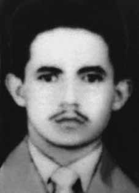

Manoel
Raimundo
Soares
CIRCUNSTÂNCIAS DA MORTE
Em 11 de março de 1966, foi preso em frente ao Auditório Araújo Vianna pelos sargentos à paisana Carlos Otto Bock e Nilton Aguinadas, da 6ª Companhia de Polícia do Exército, sob ordens do capitão Darci Gomes Prange, comandante da Companhia. Foi levado primeiro ao quartel, onde foi submetido a interrogatórios e torturas. Depois, foi transferido para a sede do Departamento de Ordem Política e Social do Rio Grande do Sul (DOPS-RS), onde permaneceu por cerca de uma semana e continuou a ser torturado, em ação comandada pelos delegados José Morsch, Itamar Fernandes de Souza e Enir Barcelos da Silva. Ficou todo esse período em regime de incomunicabilidade. De acordo com relatos de outros presos no DOPS, Manoel era torturado todas as noites em uma cela separada, mas os demais detentos não só podiam ouvir os seus gritos como o viam voltar para a cela com sinais de queimadura e espancamentos. Numa ocasião, a advogada Élida Costa, que esteve presa no local, viu Manoel ser carregado desmaiado para outra cela. Segundo esses relatos, as sessões de tortura eram comandadas pelo delegado José Morsch. Em depoimento publicado no jornal Zero Hora, de 17 de setembro de 1966, Antônio Giudice, detido no DOPS, de 10 a 15 de março de 1966, relatou que conversou com Manoel Raimundo, vendo “os hematomas e cicatrizes das torturas que vinha sofrendo”, pois “era diariamente, torturado, colocado várias vezes no pau-de-arara, sofrendo choques elétricos, espancado e queimado por pontas de cigarros”. i Aldo Alves Oliveira, funcionário da Companhia Carris, preso no DOPS desde 10 de março, testemunhou ter conhecido Manoel, que “mostrava vários sinais de sevícias”. Na ocasião, viu quando o ex-sargento “estava sentado no corredor” de “acesso à cela”, “sem camisa”, “as marcas de queimaduras” e sinais de violência. Devido aos maustratos, ele não podia engolir alimentos sólidos, por isso Aldo e outros presos davam-lhe um pouco do leite que havia sido enviado por familiares. O próprio sargento Manoel Raimundo apontou, em uma de suas cartas à esposa, o nome de dois de seus torturadores, o primeiro tenente-intendente Luiz Alberto Nunes de Souza e o segundo-sargento Joaquim Athos Ramos Pedroso: […] Conduziram-me para o quartel da 6ª. Cia. de Polícia do Exército. Ali, debaixo de cruel massacre no qual se destacaram o 1o tenente Nunes e o 2o sargento Pedroso […] Minha vista esquerda, porém, infelizmente creio tê-la perdido parcialmente, após uma borrachada no supercílio correspondente, aplicada pelo 1o tenente Nunes, da PE. ii No dia 19 de março, o delegado Itamar Fernandes de Souza transferiu Manoel para o presídio improvisado na “Ilha do Presídio”, inicialmente batizada de Ilha das Pedras Brancas, onde o ex-sargento permaneceu até o dia 13 de agosto em regime de incomunicabilidade. Nesse último dia, através de memorando assinado pelo delegado José Morsch, Manoel foi entregue a funcionários do DOPS. Com a ajuda de carcereiros do presídio, o ex-sargento conseguiu remeter algumas cartas a sua esposa, Elizabeth. Por meio desses relatos, é possível conhecer o tratamento que recebeu desde a sua prisão até o período próximo à sua morte. As duas últimas cartas que Elisabeth recebeu do marido foram escritas em 10 de julho de 1966. Na primeira, ele dizia: Ainda estou vivo. Espero de todo o coração que você tenha recebido as cartas que remeti anteriormente. Esta é a oitava. Nunca pensei que o sentimento que me une a você chegasse aos limites de uma necessidade. (…) Todas as torturas físicas a que fui submetido na PE e no DOPS não me abateram. No entanto, como verdadeiras punhaladas, tortura-me, machuca, amarga, este impedimento ilegal de receber uma carta, da mulher, que hoje, mais do que nunca, é a única razão de minha vida. O corpo de Manoel Raimundo Soares foi descoberto por volta das 17 horas do dia 24 de agosto de 1966, boiando entre taquareiras, por dois moradores da Ilha das Flores, próxima a Porto Alegre. Ele foi sepultado no cemitério de São Miguel e Almas, em Porto Alegre. Pela grande repercussão do caso, foram abertas quatro investigações: um inquérito policial, um Inquérito Policial Militar (IPM), a cargo do III Exército, uma investigação do Ministério Público estadual, e uma Comissão Parlamentar de Inquérito (CPI) na Assembleia Legislativa do Rio Grande do Sul. Segundo o depoimento do fiscal chefe da ilha-presídio do Rio Guaíba, Manoel Raimundo deixara aquela prisão a 13 de agosto, sendo entregue a agentes do DOPS no ancoradouro da Vila Assunção. A versão oficial foi a de que ele foi solto em 13 de agosto e que teria sido justiçado, vítima de seus próprios companheiros, em virtude dos depoimentos que prestou. Foi essa a conclusão do IPM. Esta versão foi contraditada pelo promotor Paulo Cláudio Tovo, que em seu relatório afirmou que “a bússola dos indícios aponta firmemente para o DOPS”. A investigação do Ministério Público estadual chegou aos nomes do major de Infantaria Luiz Carlos Menna Barreto, chefe de gabinete da Secretaria de Segurança Pública do Rio Grande do Sul e responsável pelo Dopinha, centro clandestino de tortura em Porto Alegre; do delegado José Morsch, diretor da Divisão de Segurança Política e Social e substituto do titular do DOPS-RS, que era o delegado Domingos Fernandes de Souza; além de outros delegados da Polícia Civil: Enir Barcelos da Silva e Itamar Fernandes de Souza, este último chefe da Seção de Investigações e Cartório do DOPS-RS. Segundo o promotor Paulo Cláudio Tovo: Quanto às torturas sofridas por Manoel Raimundo Soares, os indícios apontam firmemente para o major Luiz Carlos Menna Barreto e os delegados José Morsch, Itamar Fernandes de Souza e Enir Barcelos da Silva, todos em coautoria, quer como mandantes, quer como executores. (…) No tocante ao fato principal, ou seja, ao homicídio praticado (…), indícios de co-autoria, já examinados, apontam como suspeitos o major Luiz Carlos Menna Barreto (chefe todo-poderoso do DOPS e Dopinha) e José Morsch.iii O promotor apontou duas hipóteses para a morte do sargento: A vítima teria sido submetida a um banho ou caldo, por parte dos agentes do DOPS, processo que consiste em arrancar do paciente a confissão, mergulhando-o na água até quase a asfixia. teria havido um acidente, escapando o preso da corda que o prendia, ou o sargento, conseguindo desvencilhar-se, teria se jogado ao rio.iv A Comissão Parlamentar de Inquérito (CPI) da Assembleia Legislativa chegou a conclusões semelhantes: concluiu que a morte de Manoel Raimundo foi responsabilidade do major de Infantaria Luiz Carlos Menna Barreto, em coautoria com os delegados José Morsch e Itamar Fernandes de Souza. Em relação ao delegado José Morsch, o relatório da CPI constatou que existiam “suficientes subsídios de informação que permitem mostrar a personalidade delinquente desse servidor do DOPS.” Durante os trabalhos da CPI foram ouvidas testemunhas como Aldo Alves de Oliveira, Edgar da Silva e Eni de Freitas, que testemunharam ser o delegado Morsch responsável pela tortura de Manoel Raimundo. A CPI também apontou para indiciamento o secretário de Segurança Pública, Washington Bermudez, e o superintendente dos Serviços Policiais, o major Lauro Melchiades Rieth. Em março de 1973, a viúva de Manoel Raimundo, Elizabeth Challup, iniciou ação judicial requerendo a responsabilização da União e de agentes do Estado pela morte de seu marido. Na ação, foram apontados novos nomes relacionados à tortura e morte do sargento, como o capitão de Infantaria Áttila Rohrsetzer, e tabém o capitão Luiz Alberto Nunes de Souza, os sargentos Nilo Vaz de Oliveira (vulgo Jaguarão), Ênio Cardoso da Silva, Theobaldo Eugênio Berhens, Itamar de Matos Bones e Ênio Castilho Ibanez. Em 1978, o tenente reformado da Aeronáutica, Mário Ranciaro fez novas denúncias sobre o Caso das Mãos Amarradas. Mário Ranciaro fez diversas denúncias e foram ouvidas testemunhas, entre militares e civis, que presenciaram a morte de Manoel. Segundo Ranciaro, Manoel Raimundo foi espancado pelo primeiro tenente Luiz Alberto Nunes de Souza, pelo sargento Joaquim Athos Ramos Pedroso, além de outros militares daquela companhia, ficando parcialmente cego. No DOPS, foi entregue ao delegado de plantão Enir Barcelos da Silva, e foi “violentamente esbofeteado, espancado, torturado e mesmo massacrado, durante mais de uma semana”, pelo delegado Itamar Fernandes de Souza e por outros policias do DOPS. Foi levado no dia 13 de agosto de 1966 da Ilha do Presídio novamente para o DOPS, onde recebeu novamente tratamento “desumano e degradante, com violento espancamento, sevícias e torturas”, das quais participaram o major de Infantaria Luiz Carlos Menna Barreto; o capitão de Infantaria Áttila Rohrsetzer; e os delegados José Morsch e Itamar Fernandes de Souza. De acordo com Mário Ranciaro, após tortura, na tarde no dia 13 de agosto, Manoel foi mantido em uma sala do prédio da Secretaria de Segurança Pública. À noite foi colocado em um jipe do Exército e conduzido ao rio Jacuí, onde foi assassinado por militares do III Exército e por civis subordinados ao major de Infantaria Luiz Carlos Menna Barreto. O sargento Hugo Kretschiper, segundo Ranciaro, mencionou que estava cumprindo ordens de Menna Barreto para executar Manoel Raimundo. Mesmo com todas as evidências, a Justiça decidiu, à época, que não havia elementos que pudessem fundamentar a reabertura do caso visando à investigação das circunstâncias da morte do sargento. Somente em dezembro de 2000, o juiz da 5a Vara Federal de Porto Alegre proferiu sentença favorável à viúva, mas a União recorreu. Em 12 de setembro de 2005, acórdão da 3a turma do Tribunal Regional Federal (TRF) da 4a Região negou provimento ao recurso da União e manteve a indenização concedida, confirmando a sentença de primeira instância e assegurando a tutela antecipada, o que permitiu o pagamento imediato de pensão vitalícia à viúva, retroativa a 13 de agosto de 1966, com base na remuneração integral de segundo-sargento. Na CEMDP, o caso de Manoel Raimundo (218/96) teve como relator Nilmário Miranda e foi aprovado por unanimidade em 2 de abril de 1996. A morte de Manoel Raimundo Soares é também relatada no capítulo 13, Casos Emblemáticos, deste Relatório.
On March 11, 1966, he was arrested in front of the Araújo Vianna Auditorium by plainclothes sergeants Carlos Otto Bock and Nilton Aguinadas, from the 6th Army Police Company, under orders from Captain Darci Gomes Prange, commander of the Company. He was first taken to the barracks, where he was subjected to interrogation and torture. He was then transferred to the headquarters of the Department of Political and Social Order of Rio Grande do Sul (DOPS-RS), where he remained for around a week and continued to be tortured, in an action led by delegates José Morsch, Itamar Fernandes de Souza and Enir Barcelos da Silva. He remained incommunicado throughout this period. According to reports from other inmates at DOPS, Manoel was tortured every night in a separate cell, but the other inmates could not only hear his screams but also see him return to his cell with signs of burns and beatings. On one occasion, lawyer Élida Costa, who was detained there, saw Manoel being carried unconscious to another cell. According to these reports, the torture sessions were led by delegate José Morsch. In a statement published in the newspaper Zero Hora, on September 17, 1966, Antônio Giudice, detained at DOPS, from March 10 to 15, 1966, reported that he spoke with Manoel Raimundo, seeing “the bruises and scars from the torture he had been suffering”, as “he was tortured daily, placed several times in the pau-de-arara, suffering electric shocks, beaten and burned by cigarette butts”. i Aldo Alves Oliveira, an employee of Companhia Carris, detained at the DOPS since March 10, testified that he had met Manoel, who “showed several signs of abuse”. At the time, he saw the former sergeant “sitting in the corridor” leading to “access to the cell”, “without a shirt”, “burn marks” and signs of violence. Due to the mistreatment, he could not swallow solid food, so Aldo and other prisoners gave him some of the milk that had been sent by family members. Sergeant Manoel Raimundo himself mentioned, in one of his letters to his wife, the names of two of his torturers, First Lieutenant Luiz Alberto Nunes de Souza and Second Sergeant Joaquim Athos Ramos Pedroso: […] They took me to the 6th barracks. Army Police Company. There, under a cruel massacre in which 1st Lieutenant Nunes and 2nd Sergeant Pedroso stood out […] My left sight, however, unfortunately I believe I have partially lost it, after a blow to the corresponding eyebrow, applied by 1st Lieutenant Nunes, from PE. ii On March 19, police chief Itamar Fernandes de Souza transferred Manoel to the improvised prison on “Ilha do Presídio”, initially named Ilha das Pedras Brancas, where the former sergeant remained incommunicado until August 13. On that last day, through a memorandum signed by delegate José Morsch, Manoel was handed over to DOPS employees. With the help of prison guards, the former sergeant managed to send some letters to his wife, Elizabeth. Through these reports, it is possible to learn about the treatment he received from the time of his arrest until the period close to his death. The last two letters that Elisabeth received from her husband were written on July 10, 1966. In the first, he said: I'm still alive. I hope with all my heart that you have received the letters I sent previously. This is the eighth. I never thought that the feeling that unites me with you would reach the limits of a necessity. (…) All the physical torture I was subjected to in PE and DOPS did not break me. However, like real stabs, this illegal impediment to receiving a letter from the woman, who today, more than ever, is the only reason for my life, tortures, hurts and embitters me. The body of Manoel Raimundo Soares was discovered around 5 pm on August 24, 1966, floating among bamboo trees, by two residents of Ilha das Flores, near Porto Alegre. He was buried in the São Miguel e Almas cemetery, in Porto Alegre. Due to the great repercussion of the case, four investigations were opened: a police inquiry, a Military Police Inquiry (IPM), in charge of the III Army, an investigation by the state Public Prosecutor's Office, and a Parliamentary Commission of Inquiry (CPI) in the Legislative Assembly of Rio Grande do Sul. According to the testimony of the chief inspector of the Guaíba River prison island, Manoel Raimundo left that prison on August 13, being handed over to DOPS agents at the Vila anchorage. Assumption. The official version was that he was released on August 13 and that he would have been prosecuted, a victim of his own companions, due to the statements he gave. This was the conclusion of the IPM. This version was contradicted by prosecutor Paulo Cláudio Tovo, who in his report stated that “the compass of evidence points firmly towards the DOPS”. The investigation by the state Public Ministry reached the names of Infantry Major Luiz Carlos Menna Barreto, chief of staff of the Public Security Secretariat of Rio Grande do Sul and responsible for Dopinha, a clandestine torture center in Porto Alegre; of delegate José Morsch, director of the Political and Social Security Division and replacement for the head of DOPS-RS, who was delegate Domingos Fernandes de Souza; in addition to other Civil Police delegates: Enir Barcelos da Silva and Itamar Fernandes de Souza, the latter head of the Investigations and Registry Section of DOPS-RS. According to prosecutor Paulo Cláudio Tovo: Regarding the torture suffered by Manoel Raimundo Soares, the evidence firmly points to Major Luiz Carlos Menna Barreto and delegates José Morsch, Itamar Fernandes de Souza and Enir Barcelos da Silva, all in co-authorship, either as principals or as executors. (…) Regarding the main fact, that is, the murder carried out (…), evidence of co-authorship, already examined, points to Major Luiz Carlos Menna Barreto (all-powerful head of the DOPS and Dopinha) and José Morsch as suspects. suffocation. There would have been an accident, with the prisoner escaping from the rope that held him, or the sergeant, managing to free himself, would have thrown himself into the river.iv The Parliamentary Inquiry Commission (CPI) of the Legislative Assembly reached similar conclusions: it concluded that the death of Manoel Raimundo was the responsibility of Infantry Major Luiz Carlos Menna Barreto, in co-authorship with delegates José Morsch and Itamar Fernandes de Souza. In relation to delegate José Morsch, the CPI report found that there was “sufficient information to show the delinquent personality of this DOPS employee.” During the CPI's work, witnesses such as Aldo Alves de Oliveira, Edgar da Silva and Eni de Freitas were heard, who testified that delegate Morsch was responsible for the torture of Manoel Raimundo. The CPI also appointed the Secretary of Public Security, Washington Bermudez, and the superintendent of Police Services, Major Lauro Melchiades Rieth, for indictment. In March 1973, Manoel Raimundo's widow, Elizabeth Challup, initiated legal action demanding that the Union and State agents be held responsible for her husband's death. In the action, new names related to the torture and death of the sergeant were named, such as Infantry Captain Áttila Rohrsetzer, and also Captain Luiz Alberto Nunes de Souza, Sergeants Nilo Vaz de Oliveira (aka Jaguarão), Ênio Cardoso da Silva, Theobaldo Eugênio Berhens, Itamar de Matos Bones and Ênio Castilho Ibanez. In 1978, retired Air Force lieutenant Mário Ranciaro made new allegations about the Case of the Tied Hands. Mário Ranciaro made several complaints and witnesses were heard, including military personnel and civilians, who witnessed Manoel's death. According to Ranciaro, Manoel Raimundo was beaten by first lieutenant Luiz Alberto Nunes de Souza, by sergeant Joaquim Athos Ramos Pedroso, as well as other soldiers from that company, leaving him partially blind. At the DOPS, he was handed over to the police officer on duty Enir Barcelos da Silva, and was “violently slapped, beaten, tortured and even massacred, for more than a week”, by police officer Itamar Fernandes de Souza and other DOPS police officers. He was taken on August 13, 1966 from Ilha do Presídio again to the DOPS, where he again received “inhumane and degrading treatment, with violent beatings, abuse and torture”, in which Infantry Major Luiz Carlos Menna Barreto participated; Infantry Captain Áttila Rohrsetzer; and delegates José Morsch and Itamar Fernandes de Souza. According to Mário Ranciaro, after torture, on the afternoon of August 13, Manoel was kept in a room in the Public Security Secretariat building. At night, he was placed in an Army jeep and taken to the Jacuí River, where he was murdered by soldiers from the Third Army and by civilians subordinate to Infantry Major Luiz Carlos Menna Barreto. Sergeant Hugo Kretschiper, according to Ranciaro, mentioned that he was following orders from Menna Barreto to execute Manoel Raimundo. Even with all the evidence, the Court decided, at the time, that there were no elements that could support the reopening of the case with a view to investigating the circumstances of the sergeant's death. Only in December 2000, the judge of the 5th Federal Court of Porto Alegre handed down a ruling in favor of the widow, but the Union appealed. On September 12, 2005, a ruling by the 3rd panel of the Federal Regional Court (TRF) of the 4th Region dismissed the Union's appeal and maintained the compensation granted, confirming the first instance sentence and ensuring early protection, which allowed the immediate payment of a lifetime pension to the widow, retroactive to August 13, 1966, based on the full salary of a second sergeant. At CEMDP, the case of Manoel Raimundo (218/96) was reported by Nilmário Miranda and was unanimously approved on April 2, 1996. The death of Manoel Raimundo Soares is also reported in chapter 13, Emblematic Cases, of this Report.
El 11 de marzo de 1966 fue detenido frente al Auditorio Araújo Vianna por los sargentos vestidos de civil Carlos Otto Bock y Nilton Aguinadas, de la VI Compañía de Policía del Ejército, por órdenes del capitán Darci Gomes Prange, comandante de la Compañía. Primero lo llevaron al cuartel, donde lo sometieron a interrogatorios y torturas. Luego fue trasladado a la sede del Departamento de Orden Político y Social de Rio Grande do Sul (DOPS-RS), donde permaneció aproximadamente una semana y continuó siendo torturado, en una acción encabezada por los delegados José Morsch, Itamar Fernandes de Souza y Enir Barcelos da Silva. Permaneció incomunicado durante todo este período. Según informes de otros reclusos del DOPS, Manoel fue torturado todas las noches en una celda separada, pero los demás reclusos no sólo pudieron escuchar sus gritos sino también verlo regresar a su celda con signos de quemaduras y palizas. En una ocasión, la abogada Élida Costa, que se encontraba allí detenida, vio cómo llevaban a Manoel inconsciente a otra celda. Según estos informes, las sesiones de tortura fueron dirigidas por el delegado José Morsch. En una declaración publicada en el diario Zero Hora, el 17 de septiembre de 1966, Antônio Giudice, detenido en el DOPS, del 10 al 15 de marzo de 1966, relató que habló con Manoel Raimundo, viendo “los moretones y las cicatrices de las torturas que venía sufriendo”, ya que “lo torturaban a diario, lo colocaban varias veces en el pau-de-arara, sufría descargas eléctricas, lo golpeaban y lo quemaban con colillas”. Aldo Alves Oliveira, empleado de la Companhia Carris, detenido en el DOPS desde el 10 de marzo, declaró haber conocido a Manoel, quien “mostraba varios signos de abuso”. En ese momento vio al exsargento “sentado en el pasillo” que daba “acceso a la celda”, “sin camiseta”, “marcas de quemaduras” y signos de violencia. Debido a los malos tratos, no podía tragar alimentos sólidos, por lo que Aldo y otros presos le dieron un poco de la leche que le habían enviado sus familiares. El propio sargento Manoel Raimundo mencionó, en una de sus cartas a su esposa, los nombres de dos de sus torturadores, el primer teniente Luiz Alberto Nunes de Souza y el sargento segundo Joaquim Athos Ramos Pedroso: […] Me llevaron al cuartel 6. Compañía de Policía del Ejército. Allí, bajo una cruel masacre en la que se destacaron el teniente 1° Nunes y el sargento 2° Pedroso […] Mi vista izquierda, sin embargo, lamentablemente creo haberla perdido parcialmente, luego de un golpe en la ceja correspondiente, propinado por el teniente 1° Nunes, del PE. ii El 19 de marzo, el jefe de policía Itamar Fernandes de Souza trasladó a Manoel a la prisión improvisada de “Ilha do Presídio”, inicialmente denominada Ilha das Pedras Brancas, donde el ex sargento permaneció incomunicado hasta el 13 de agosto. Ese último día, mediante memorando firmado por el delegado José Morsch, Manoel fue entregado a empleados del DOPS. Con la ayuda de los guardias de la prisión, el ex sargento logró enviar algunas cartas a su esposa, Elizabeth. A través de estos informes se puede conocer el trato que recibió desde el momento de su detención hasta el período cercano a su muerte. Las dos últimas cartas que Elisabeth recibió de su marido fueron escritas el 10 de julio de 1966. En la primera decía: Todavía estoy viva. Espero de todo corazón que hayas recibido las cartas que te envié anteriormente. Este es el octavo. Nunca pensé que el sentimiento que me une a ti llegaría a los límites de una necesidad. (…) Todas las torturas físicas a las que fui sometido en educación física y DOPS no me doblegaron. Sin embargo, como verdaderas puñaladas, este impedimento ilegal para recibir una carta de la mujer que hoy, más que nunca, es la única razón de mi vida, me tortura, duele y amarga. El cuerpo de Manoel Raimundo Soares fue descubierto alrededor de las 17 horas del 24 de agosto de 1966, flotando entre bambúes, por dos vecinos de Ilha das Flores, cerca de Porto Alegre. Fue enterrado en el cementerio de São Miguel e Almas, en Porto Alegre. Debido a la gran repercusión del caso, fueron abiertas cuatro investigaciones: una investigación policial, una investigación de la Policía Militar (IPM), a cargo del III Ejército, una investigación del Ministerio Público estatal, y una Comisión Parlamentaria de Investigación (CPI) en la Asamblea Legislativa de Rio Grande do Sul. Según el testimonio del inspector jefe de la isla penitenciaria del río Guaíba, Manoel Raimundo salió de esa prisión el 13 de agosto, siendo entregado a agentes del DOPS en el fondeadero de Vila. Suposición. La versión oficial fue que fue liberado el 13 de agosto y que habría sido procesado, víctima de sus propios compañeros, por las declaraciones que dio. Esta fue la conclusión del IPM. Esta versión fue contradicha por el fiscal Paulo Cláudio Tovo, quien en su informe afirmó que “la brújula de la evidencia apunta firmemente hacia el DOPS”. La investigación del Ministerio Público estatal alcanzó los nombres del mayor de Infantería Luiz Carlos Menna Barreto, jefe de gabinete de la Secretaría de Seguridad Pública de Rio Grande do Sul y responsable de Dopinha, centro clandestino de tortura en Porto Alegre; del delegado José Morsch, director de la División Política y de Seguridad Social y sustituto del jefe del DOPS-RS, que era el delegado Domingos Fernandes de Souza; además de otros delegados de la Policía Civil: Enir Barcelos da Silva e Itamar Fernandes de Souza, este último jefe de la Sección de Investigaciones y Registro del DOPS-RS. Según el fiscal Paulo Cláudio Tovo: Respecto a las torturas sufridas por Manoel Raimundo Soares, las pruebas apuntan firmemente al mayor Luiz Carlos Menna Barreto y a los delegados José Morsch, Itamar Fernandes de Souza y Enir Barcelos da Silva, todos en coautoría, ya sea como principales o como ejecutores. (…) En cuanto al hecho principal, es decir, el asesinato perpetrado (…), las pruebas de coautoría, ya examinadas, señalan como sospechosos al mayor Luiz Carlos Menna Barreto (todopoderoso jefe del DOPS y de la Dopinha) y a José Morsch. asfixia. Se habría producido un accidente, con el prisionero escapando de la cuerda que lo sujetaba, o el sargento, logrando liberarse, se habría arrojado al río.iv La Comisión de Investigación Parlamentaria (CPI) de la Asamblea Legislativa llegó a conclusiones similares: concluyó que la muerte de Manoel Raimundo era responsabilidad del Mayor de Infantería Luiz Carlos Menna Barreto, en coautoría con los delegados José Morsch e Itamar Fernandes de Souza. En relación al delegado José Morsch, el informe del CPI encontró que existía “información suficiente para demostrar la personalidad delictiva de este empleado del DOPS”. Durante el trabajo del CPI fueron escuchados testigos como Aldo Alves de Oliveira, Edgar da Silva y Eni de Freitas, quienes declararon que el delegado Morsch fue responsable de la tortura de Manoel Raimundo. El CPI también designó para procesamiento al secretario de Seguridad Pública, Washington Bermúdez, y al superintendente de Servicios Policiales, mayor Lauro Melchiades Rieth. En marzo de 1973, la viuda de Manoel Raimundo, Elizabeth Challup, inició acciones legales exigiendo que los agentes de la Unión y del Estado fueran responsabilizados por la muerte de su marido. En la acción fueron nombrados nuevos nombres relacionados con la tortura y muerte del sargento, como el Capitán de Infantería Áttila Rohrsetzer, y también el Capitán Luiz Alberto Nunes de Souza, los Sargentos Nilo Vaz de Oliveira (alias Jaguarão), Ênio Cardoso da Silva, Theobaldo Eugênio Berhens, Itamar de Matos Bones y Ênio Castilho Ibanez. En 1978, el teniente retirado de la Fuerza Aérea Mário Ranciaro hizo nuevas denuncias sobre el Caso de las Manos Atadas. Mário Ranciaro presentó varias denuncias y se escuchó a testigos, entre ellos militares y civiles, que presenciaron la muerte de Manoel. Según Ranciaro, Manoel Raimundo fue golpeado por el primer teniente Luiz Alberto Nunes de Souza, por el sargento Joaquim Athos Ramos Pedroso, así como por otros militares de esa compañía, dejándolo parcialmente ciego. En el DOPS, fue entregado al policía de turno Enir Barcelos da Silva, y fue “violentamente abofeteado, golpeado, torturado e incluso masacrado, durante más de una semana”, por el policía Itamar Fernandes de Souza y otros agentes del DOPS. Fue trasladado el 13 de agosto de 1966 desde Ilha do Presídio nuevamente al DOPS, donde nuevamente recibió “tratos inhumanos y degradantes, con violentos golpes, abusos y torturas”, en los que participó el Mayor de Infantería Luiz Carlos Menna Barreto; Capitán de Infantería Áttila Rohrsetzer; y los delegados José Morsch e Itamar Fernandes de Souza. Según Mário Ranciaro, después de la tortura, en la tarde del 13 de agosto, Manoel fue retenido en una habitación del edificio de la Secretaría de Seguridad Pública. Por la noche, lo subieron a un jeep del Ejército y lo llevaron al río Jacuí, donde fue asesinado por soldados del Tercer Ejército y por civiles subordinados al Mayor de Infantería Luiz Carlos Menna Barreto. El sargento Hugo Kretschiper, según Ranciaro, mencionó que cumplía órdenes de Menna Barreto de ejecutar a Manoel Raimundo. Aún con todas las pruebas, el Tribunal decidió, en su momento, que no existían elementos que pudieran sustentar la reapertura del caso con miras a investigar las circunstancias de la muerte del sargento. Recién en diciembre de 2000, el juez del 5º Tribunal Federal de Porto Alegre dictó sentencia a favor de la viuda, pero la Unión apeló. El 12 de septiembre de 2005, sentencia de la 3.ª sala del Tribunal Regional Federal (TRF) de la 4.ª Región desestimó el recurso del Sindicato y mantuvo la indemnización concedida, confirmando la sentencia de primera instancia y garantizando la protección anticipada, que permitía el pago inmediato de una pensión vitalicia a la viuda, retroactiva al 13 de agosto de 1966, basada en el salario íntegro de un sargento segundo. En el CEMDP, el caso Manoel Raimundo (218/96) fue denunciado por Nilmário Miranda y aprobado por unanimidad el 2 de abril de 1996. La muerte de Manoel Raimundo Soares también se informa en el capítulo 13, Casos Emblemáticos, de este Informe.